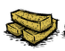
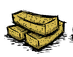
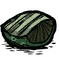
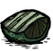
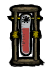
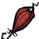
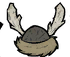
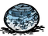
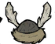
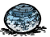

Os status são informações que o jogador deve manter sobre controle para sobreviver, geralmente ao chegar em níveis baixos ou altos certas conseqüências ocorrem: calor, desnutrição, frio e outras penalidades.
É a saúde do seu personagem,ao chegar a 0 ele morre. A maioria dos personagens possuem 150 de  e a maioria dos mobs causam 20 a 50 de dano,obviamente com exceções como bosses e outros mobs “elite” geralmente causando 70 a 100 de dano. Para recuperar HP utiliza-se certas comidas(
e a maioria dos mobs causam 20 a 50 de dano,obviamente com exceções como bosses e outros mobs “elite” geralmente causando 70 a 100 de dano. Para recuperar HP utiliza-se certas comidas( ) sendo a mais comum, receitas de panela(
) sendo a mais comum, receitas de panela( ) e dormir em uma tenda(
) e dormir em uma tenda( ). Caso o jogador morra,ele se transformará em um fantasma().
Durante essa forma, jogadores podem se movimentar para achar meios de ressureição. Interagindo com (encontradas naturalmente no mapa) ou
). Caso o jogador morra,ele se transformará em um fantasma().
Durante essa forma, jogadores podem se movimentar para achar meios de ressureição. Interagindo com (encontradas naturalmente no mapa) ou  e (que podem ser criados na seção de magia
e (que podem ser criados na seção de magia  ). Outros jogadores podem utilizar um para ressuscitar os seus amigos, porém esse método traz penalidades. Ao ressuscitar utilizando um o jogador perderá um pouco de sua vida máxima, porém usar um ira remover essa penalidade.
). Outros jogadores podem utilizar um para ressuscitar os seus amigos, porém esse método traz penalidades. Ao ressuscitar utilizando um o jogador perderá um pouco de sua vida máxima, porém usar um ira remover essa penalidade.
É a fome do seu personagem. Naturalmente a maioria dos personagens perdem 75 de  por dia,ao chegar em 0 de o personagem fica desnutrido e perde 1.25 de por segundo até que a sua fome fique acima de 0. É possível recuperar fome através de... comida!
por dia,ao chegar em 0 de o personagem fica desnutrido e perde 1.25 de por segundo até que a sua fome fique acima de 0. É possível recuperar fome através de... comida!
Dependendo da validade da comida,o jogador recebera menos pontos de fome em % de acordo com o valor base da comida.
É o estado mental do seu personagem. Ações como cavar covas, ficar no escuro, praticar magia, enfrentar monstros e comer comidas questionáveis diminuem a sua sanidade. Conforme a sua sanidade diminui a sua tela começa a ficar distorcida e perdendo a intensidade das cores. Ao chegar em 15% da sua  máxima,o personagem fica completamente insano,causando que monstros da insanidade surjam e comecem a atacar o jogador.
Para recuperar a sanidade utiliza-se certas comidas (
máxima,o personagem fica completamente insano,causando que monstros da insanidade surjam e comecem a atacar o jogador.
Para recuperar a sanidade utiliza-se certas comidas ( e ), receitas de panela( ) ,dormir() e construir coisas novas pela primeira vez().
e ), receitas de panela( ) ,dormir() e construir coisas novas pela primeira vez().

 ,
,
Determina o quão molhado o personagem está. Geralmente esse status fica oculto quando o seu valor for igual a zero. A umidade aumenta se o jogador não estiver protegido contra a chuva e outros casos específicos por exemplo durante um náufrago. Quanto mais úmido o personagem esta,menor será a sua temperatura() atual podendo levar a hipotermia. Também ocorrera o deslizamento de ferramentas, ao utilizar uma ferramenta enquanto molhado, a sua ação possui uma chance de ser interrompida e a ferramenta ira cair no chão.
Determina a temperatura do personagem. É um status invisível que ao chegar a um determinado ponto muito frio ou muito quente haverá um aviso na tela do jogador de hipotermia (congelamento na tela) ou hipertemia (ondas de vapor na tela).
Para aumentar ou diminuir a sua temperatura, o jogador deve utilizar roupadas adequadas de acordo com o clima( ),utilização da pedra térmica(
),utilização da pedra térmica(  ) e fogueiras comuns(
) e fogueiras comuns( ) ou fogueiras endotérmicas().
) ou fogueiras endotérmicas().